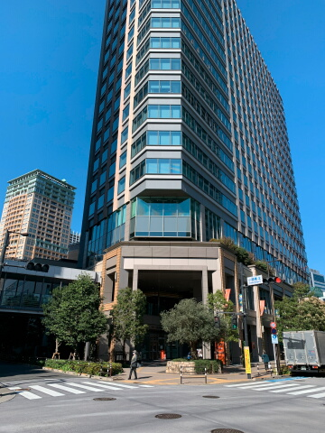
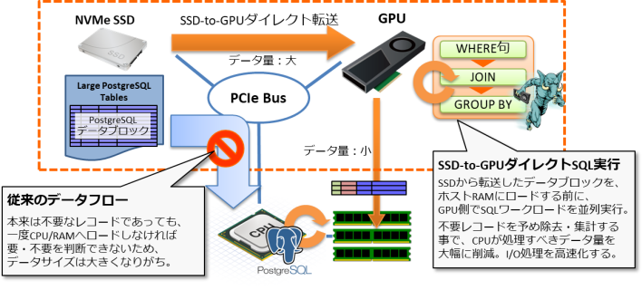
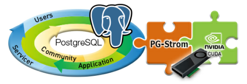
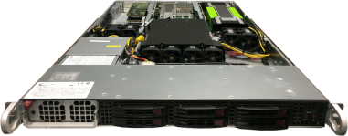
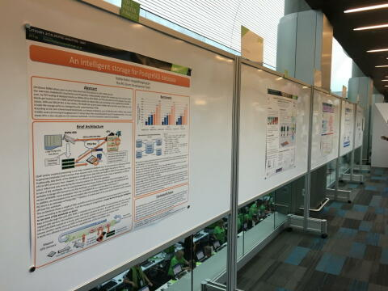

事務所移転のお知らせ
2020年11月4日(水)
本日、ヘテロDB株式会社は下記の住所へ移転いたしました。
〒141-0001
東京都品川区北品川5-5-15 大崎ブライトコア4F
品川区産業交流施設SHIP内 416号室
心機一転、今後もPG-Stromの開発と普及に努めてまいります。 今後もお引き立てのほど、よろしくお願いいたします。

PostgreSQL Conference Japan 2020のスポンサーになりました。
2020年9月15日(水)
ヘテロDB株式会社は、2020年11月13日(金)に開催のPostgreSQL Conference Japan 2020のシルバースポンサーになりました。
本カンファレンスでは、弊社代表取締役の海外が『GPU が拓く地理情報分析の新たな地平 ～GPU 版 PostGIS と位置ゲームを使った検証～』と題して講演を行うほか、PostgreSQLコミュニティで長年にわたり活躍されてきたスピーカーによる、総計14のセッション、チュートリアルが予定されております。
皆さまのご参加を心待ちにしております。
PostgreSQL Conference Japan 2019のスポンサーになりました。
2019年10月30日(水)
ヘテロDB株式会社は、2019年11月15日(金)に開催のPostgreSQL Conference Japan 2019のシルバースポンサーになりました。
本カンファレンスでは、弊社代表取締役の海外が『PostgreSQLだってビッグデータ処理したい！！ ～GPUとNVMEを駆使して毎秒10億レコードを処理する技術～』と題して講演を行うほか、PostgreSQLコミュニティで長年にわたり活躍されてきたスピーカーによる、総計14のセッション、チュートリアルが予定されております。
皆さまのご参加を心待ちにしております。
ヘテロDB、GPUを用いたデータベース高速化技術PG-Stromの販売を開始
2018年04月18日(水)
2018年4月18日、ヘテロDB株式会社（東京都品川区、代表取締役社長：海外浩平）は、GPUを用いたデータベース高速化技術であるPG-Stromのサブスクリプション製品、および同ソフトウェアを搭載したアプライアンス製品の販売を開始いたします。
ハードウェアの能力を限界まで引き出し、1U/2UラックサーバでDWH水準の処理能力を実現する PG-Strom バージョン 2.0
PG-Stromとは、最も広く使われているオープンソースのリレーショナルデータベースであるPostgreSQL向けに設計された拡張モジュールで、SQLコマンドから自動生成したGPUプログラムをGPUの持つ数千コアと広帯域メモリを用いて並列実行する事で、大量データの集計・解析処理を高速化します。

中核機能の一つSSD-to-GPUダイレクトSQL実行は、NVMe-SSD上のPostgreSQLデータブロックの内容をGPUへ直接ロードし、データがホストシステムに到着するよりも先にGPUでSQLワークロードを実行します。これによりCPUが処理すべきデータ量を数百分の一以下に削減し、I/O中心のワークロードである集計処理や全件探索といったワークロードを効率的に実行する事が可能となります。

PG-StromはPostgreSQLが公式にサポートする内部APIのみを用いて実装されており、SQL構文やデータ形式なども含め、ユーザやアプリケーションからは標準的なPostgreSQLであるかのように利用できます。クエリの特性を踏まえてオプティマイザがGPUを利用するかどうかを判断するため特別なチューニングや設定は不要であり、またトランザクショナルなデータ形式（行データ）に対しても高速化を行うため、業務系システムと情報系システム間でデータ形式を変更する必要はありません。
シングルノードのPostgreSQLという最も単純な構成に必要かつ十分な処理能力を増強する事で、アプリケーションはよりシンプルな設計が可能となり、また定常的なDB管理作業の省力化にも繋がります。
PG-Stromの実行に最適なアプライアンスモデル
PG-Stromの提供する各種のアクセラレーション機能のプラットフォームとして、最適なハードウェアを選定して予め動作検証を行い、必要なソフトウェアが全てセットアップ済みとなっているアプライアンス製品を同時にリリースします。

| HeteroServer GS120-P40 | |
|---|---|
| CPU | Intel Xeon Gold 6126T (12C, 2.6GHz) x1 |
| RAM | DDR4-2666 32GB x 6 (total 192GB) |
| GPU | NVIDIA TESLA P40 (3840C, 24GB) |
| SSD | Intel SSD DC P4600 (2.0TB; HHHL) |
| HDD | 2.0TB (SATA; 7.2krpm) x6 |
| Network | 10Gb Ethernet x2 ports |
PG-Stromの主な用途
- データウェアハウス・データマート
- バッチ・レポーティング処理
- ログデータ解析基盤
- 異常検知システム基盤
- 統計解析・機械学習基盤
PG-Stromの特長・主要機能
- PostgreSQLの一部として動作しクエリおよびデータの完全な互換性を実現
- SQLからGPUプログラムを自動生成し、SQLを透過的に高速化
- SSD-to-GPUダイレクトSQL実行
- インメモリ列指向キャッシュ
- GPUメモリストア(gstore_fdw)
- PL/CUDAユーザ定義関数
製品一覧
- サブスクリプション製品
- PG-Strom Enterprise Subscription (1GPU, 1年)
- PG-Strom Enterprise Subscription (1GPU, 3年)
-
アプライアンス製品
- HeteroServer GS120-P40
-
サブスクリプション製品は、認定済みハードウェア／ソフトウェア構成での利用が前提となります。
- 価格は全てオープンプライスとなります
以上
あらゆる産業のIT基盤であるデータベースにGPUを活用し、処理の高速化を実現したPG-Stromは、GPUの新たな活用領域を切り開いたと言えるでしょう。PG-Stromアプライアンス製品の販売開始によって、データベース上での超高速計算・解析が簡単に活用できるようになることを期待しています。
エヌビディア 日本代表 兼 米国本社副社長 大崎真孝様
本件に関するお問い合わせ先
- ヘテロDB株式会社
- メール: contact@heterodbcom
- 電話: 03-6429-9607
- 住所: 品川区西大井1-1-2-206 (西大井創業支援センター内)
GTCジャパン Inception Startup AIサミットにおいて、弊社が最優秀賞を受賞いたしました。
2017年12月13日(水)
2017年12月12日(火)～13日(水)にかけて開催されましたGPU Technology Conference Japan 2017（以下、GTCジャパン）において、『INCEPTION AI スタートアップ サミット』と題して、国内の機械学習・データサイエンス領域のスタートアップ19社によるコンテストが開催され、弊社が最優秀賞を受賞いたしました。
また、同じくGTCジャパン内のポスターセッションにおいて、弊社代表取締役・海外浩平による『PL/CUDA – In-database massive parallel analytics』と題したポスター発表が、ファイナリスト５名の中から来場者の投票により、最優秀賞を受賞いたしました。
日本で最も大規模なGPU技術カンファレンスであるGTCJapanにおいて、弊社が長年取り組んできた、GPUによる大規模データ処理の高速化、およびIn-database analyticsという新たなデータベースの適用領域に関する技術が揃って最優秀賞を受賞するというのは、大変に光栄な事であると考えております。
ユーザ様はじめ関係者の皆様のご期待に応えるべく、今後ともHeteroDB社は技術開発・製品開発に取り組んでまいります。
本件に関するお問い合わせ先
- ヘテロDB株式会社
- メール: contact@heterodbcom
- 電話: 03-6429-9607
- 住所: 品川区西大井1-1-2-206 (西大井創業支援センター内)
HeteroDBがNVIDIA「Inception Program」に加入しました
2017年9月29日(金)
GPUを用いたデータベース高速処理技術の開発・販売を手がけるHeteroDB株式会社（東京都品川区 代表取締役社長 海外浩平、以下「HeteroDB」）は、このたび、NVIDIA Corporation（カリフォルニア州サンタクララ 社長兼CEO ジェンスン・フアン、以下「NVIDIA」）がAI・データサイエンス領域のスタートアップを支援するプログラムである「Inception Program」のパートナー企業として認定されました。
NVIDIA Inception Programへの参加により、当社はNVIDIAより最新GPUテクノロジーを含む技術支援を受け、共同でのマーケティング活動を行う事が可能となります。
HeteroDBの中核技術であるPG-Stromは、GPUによるPostgreSQLのクエリ処理ワークロードの高速化と、in-databaseのデータ解析&機械学習機能を提供するものです。本プログラムの活用を通して、HeteroDBは最新世代のGPUに最適化された高速データベース製品の研究開発を強化します。 また同時に、ヘテロジニアスコンピューティングという次世代の計算機アーキテクチャの力を、データベースという最も広範に人と社会の活動を支えているソフトウェアを通して、世界中のユーザが気軽に手の届くものになるよう、製品・ソリューションの開発に取り組みます。
NVIDIA Inception Program は、人工知能(AI)やデータサイエンスの進歩に伴い業界に革命を起こそうとしているスタートアップ企業を養成することを目的としています。Inception Programは仮想インキュベーター プログラムとして設計されており、製品開発、プロトタイピング、および導入の段階でクリティカルな状態にいるメンバーを支援します。これには、ハードウェア付与やマーケティングサポートからディープラーニングエキスパートとのトレーニングに至るまで現行のメリットのカスタムセットが含まれています。 （http://www.nvidia.co.jp/object/inception-program-jp.html）
HeteroDB社について**
HeteroDB社は、GPUやNVMe-SSDなど新世代のハードウェアの能力を最大限に引き出し、データベース処理の高速化とシステム運用のシンプル化を低コストで実現するHeteroServer[*1]の開発と販売、および関連ソリューションの提供を目的として設立されたスタートアップです。 GPUとデータベースという異なる技術領域に精通したプロフェッショナル集団であり、お客様の課題に対する深い洞察から最適な解決方法をご提案します。また、イノベーションの成果を広くオープンソースコミュニティへと還元し、エコシステムの発展に寄与することを目指しています。
[*1] HeteroServer: PostgreSQLデータベースを中核に、GPU/SSDなど最新のハードウェアと、その能力を最大限に引き出すための拡張モジュールであるPG-Stromを搭載したデータベースアプライアンス製品。2018年3月のリリースを予定。
本件に関するお問い合わせ先
- ヘテロDB株式会社
- メール: contact@heterodbcom
- 電話: 03-6429-9607
- 住所: 品川区西大井1-1-2-206 (西大井創業支援センター内)
IPA未踏アドバンスト事業において、弊社従業員の提案が採択されました。
2017年7月28日(金)
本日、独立行政法人情報処理推進機構（IPA）は、弊社チーフアーキテクト 海外浩平、同チーフセールスエンジニア 柏木 岳彦、同アルバイト 遠藤克浩の３名の共同提案による『ヘテロジニアスなIn-Databaseデータ解析・機械学習基盤』を含む6件を、第1回 IPA未踏アドバンスト事業の採択案件として発表いたしました。
IPA 未踏アドバンスト事業について
「未踏アドバンスト事業」は、市場性、開発実現性、事業性を兼ね備えたITを活用した革新的なアイデア・プロトタイプ（製品・サービスの企画・構想を練っている段階、製品・サービスのプロトタイプ開発を継続している段階）を有し、起業または事業化に強い関心を持つ未踏的IT人材に対し、プロジェクトマネージャー等による指導・助言、活動に必要となる資金支援を行う事業です。 （IPAウェブサイトより引用）
プロジェクトの概要
本プロジェクトでは、GPUの並列計算能力を活用して解析系SQLの高速化を実現するPostgreSQL向け拡張モジュール（PG-Strom）に、次の機能を実装する。①SSD-to-GPUダイレクトSQL実行機能 （GPU/SSD密結合によるI/O高速化）、②PL/CUDA統計解析・機械学習ライブラリ（In-databaseデータ解析処理）、③行形式⇒列形式の変換に対応したストレージ機構 （ワークロード最適化SSD/キャッシュ）。これら①～③の機能を用いて、GPUやSSDといったコモディティだが強力な処理能力を有するハードウェアと、その能力を最大限に引き出すソフトウェアの組み合わせにより、リレーショナル・データベースという情報システムの中で最もデータが集積するコンポーネントをデータ解析・機械学習の基盤として再定義する。
プロジェクトメンバーの設立する新会社は、前述の技術を搭載した垂直統合型高速DBシステム（仮称：HeteroServer）を製品化し、次の３セグメントをターゲットとしてこれら市場の開拓にあたる。①高性能・低価格を武器とした情報系システムの商用DBからの移行 ②高速なI/Oを武器としたネットワーク事業者のログ解析 ③In-database処理を武器とした金融・信販事業者のアノマリー検知。 新会社は、本垂直統合型高速DBシステムの販売（製品事業）、および、本技術を利用したデータ利活用コンサルティング（サービス事業）の２つを軸とした事業を行う。
プロジェクトメンバー
- 海外 浩平（ヘテロDB株式会社 チーフアーキテクト 兼 代表取締役社長）
- 柏木 岳彦（ヘテロDB株式会社 チーフセールスエンジニア 兼 取締役副社長）
- 遠藤 克浩（慶應義塾大学 理工学部）
今後の見通し
今後、未踏アドバンストプロジェクト期間である2017年8月から2018年2月にかけて、IPAおよびプロジェクトマネージャ衛藤バタラ氏の支援、助言の下で、HeteroServer製品の中核技術であるPG-StromやPL/CUDA機械学習ライブラリの開発、およびアーリーアダプタユーザの開拓に取り組んでまいります。
本件に関するお問い合わせ先
- ヘテロDB株式会社
- メール: contact@heterodbcom
- 電話: 03-6429-9607
- 住所: 品川区西大井1-1-2-206 (西大井創業支援センター内)
ヘテロDB株式会社を設立しました
〜 ヘテロジニアスコンピューティング技術のデータベース領域への適用に向けて〜
2017年7月4日(火)
本日、PG-Strom Development Teamのコアメンバである海外浩平、および柏木岳彦は、GPUやSSD、FPGAなどヘテロジニアス・コンピューティング技術を活用し、高性能と低価格、運用しやすさを両立するデータベース製品、ソリューション、および関連サービスを提供する新会社、ヘテロDB株式会社を設立した事をお知らせします。
新会社のミッション
私たちは今、何十年に一度の計算機アーキテクチャの変革期という、非常に面白い時代に生きています。 ムーアの法則が終焉に近づき、プロセッサはマルチコアからメニーコアへと進化し、さらにはGPUやFPGAといった設計思想の異なる半導体デバイスを併用しなければ性能向上が見込めない世界がすぐそこまで来ています。 これらのヘテロジニアスな計算機アーキテクチャにおいては、ソフトウェアはハードウェアの進化に"ただ乗り"する事はできません。ハードウェアの能力を引き出すために、最適なソフトウェアを再設計する必要があるのです。
私たちは、5年あまり前からGPUの並列計算能力を用いてPostgreSQLのワークロードを高速化するオープンソースの拡張モジュール「PG-Strom」の開発に取り組んできました。 ソフトウェア開発者として純粋にこの技術領域が面白いという他に、データベース管理システムという最も広範に人と社会を支えているソフトウェアの改良を通じて、さらにはオープンソースソフトウェアのエコシステムを通じて、ヘテロジニアスコンピューティングという次世代の計算機アーキテクチャの力を、世界中のユーザが気軽に手の届くものにするという使命感に支えられてのものです。
本日創業したヘテロDB株式会社は、次の３つのミッションの実現を目的としています。
- PG-Stromをはじめとする、ヘテロジニアスコンピューティング技術を組込んだデータベース製品を実現し、速さ、安さ、使いやすさを両立するデータ処理基盤を提供すること。
- GPUとデータベースという異なる技術領域に精通したプロフェッショナルであり、お客様の課題に対する深い洞察から最適な解決方法を導き出す事。
- 企業や国、技術領域の壁を越え、広くイノベーションの成果をオープンソースコミュニティに還元し、エコシステムの発展に寄与すること。
そして何より、エンジニアがわくわくするようなテクノロジーを形にし、ユーザ様ひいては社会の課題を今の時代にふさわしい形で解く事で、社会をより良くする事に貢献する企業でありたいと考えています。
新会社の概要
- 商号: ヘテロDB株式会社
- 設立: 2017年7月4日
- 代表者: 海外 浩平
- 所在地: 東京都品川区西大井一丁目１番地の２
- 資本金: 999万円
- 出資比率: 海外浩平 89.2%、柏木岳彦 10.8%
- URL： http://heterodb.com/
今後の見通し
新会社は、PG-Stromを中核とするソフトウェアの開発、およびアーリーアダプタ利用者様との共同検証、機能・品質改善を経て、2018年3月の製品販売開始を予定しております。
本件に関するお問い合わせ先
- ヘテロDB株式会社
- メール: contact@heterodbcom
- 電話: 03-6429-9607
- 住所: 品川区西大井1-1-2-206 (西大井創業支援センター内)
弊社社員の研究発表がGTC2017のTop-5ポスターに選定されました
2017年5月8日(月)

米NVIDIA社が主催する世界最大のGPU技術カンファレンスである GPU Technology Conference 2017（5月8日(月)～5月11日(木)、米国サンノゼ市）において、弊社チーフアーキテクトの海外による『An Intelligent Storage for PostgreSQL Database』と題したポスター発表が、約140件の研究開発ポスター発表の中からTop-5 Finalistに選定されました。
本発表は、HeteroServer製品の中核技術の一つであるSSD-to-GPUダイレクトSQL実行機能のコンセプト、技術概要、ベンチマーク結果を紹介したものです。 その中では、TeslaシリーズGPUの機能であるGPUDirect RDMAをNVMe-SSDからのデータ読出しに応用し、不要データのふるい落としやJOIN/GROUP BYなど問い合わせ処理をGPUで並列実行してデータ量を削減する事で、従来は専ら計算集約的な問題のアクセラレータとして使用されてきたGPUを、I/O集約的な問題に対しても有効に機能することを示しています。
- GTC 2017 Posters - ACCELERATED ANALYTICS
- P7130 - An Intelligent Storage for PostgreSQL Database[PDF]
本件に関するお問い合わせ先
- ヘテロDB株式会社
- メール: contact@heterodbcom
- 電話: 03-6429-9607
- 住所: 品川区西大井1-1-2-206 (西大井創業支援センター内)